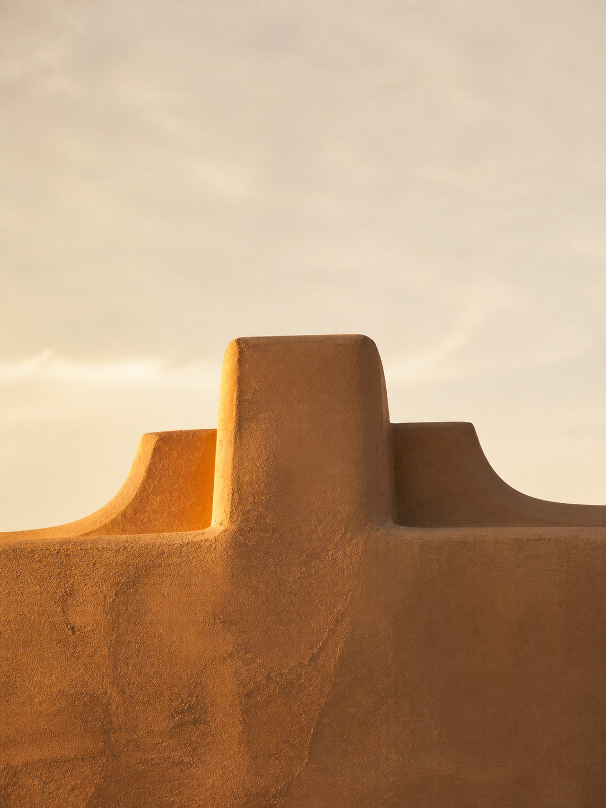
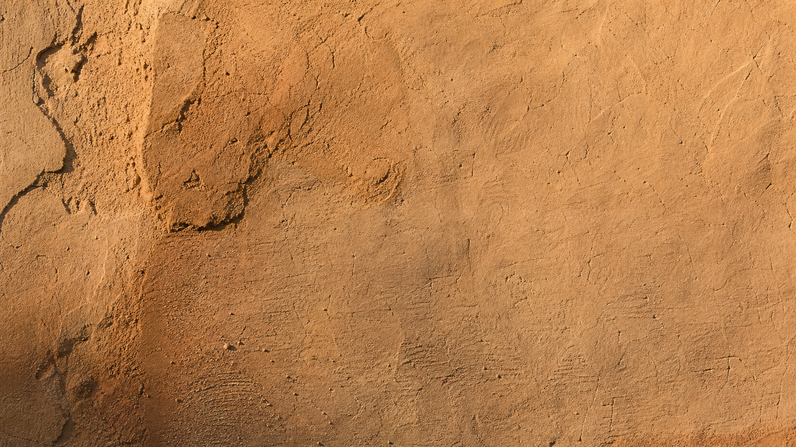
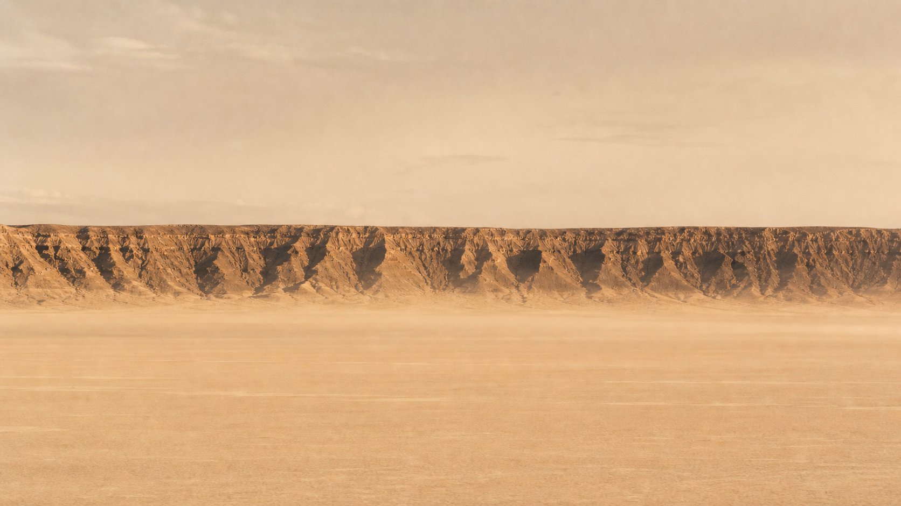
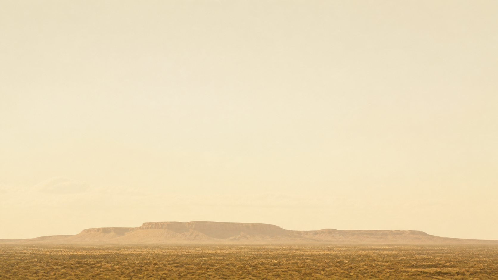
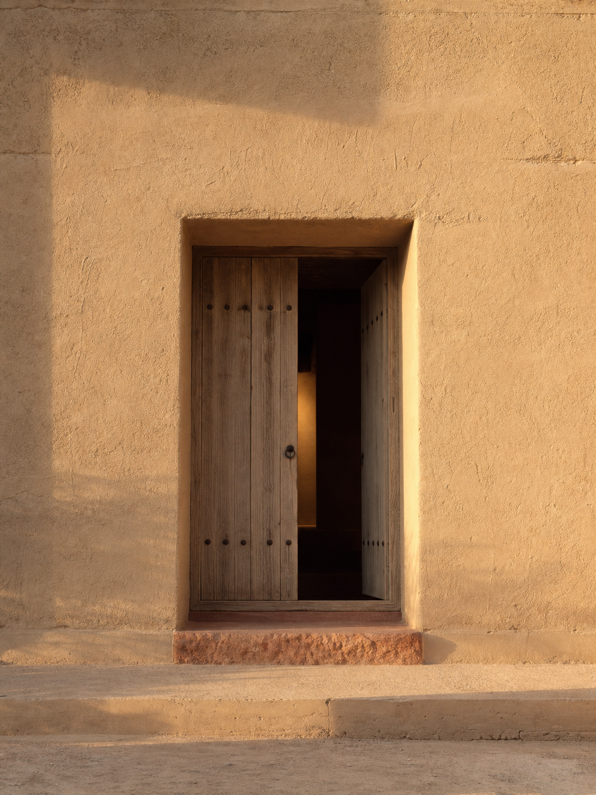
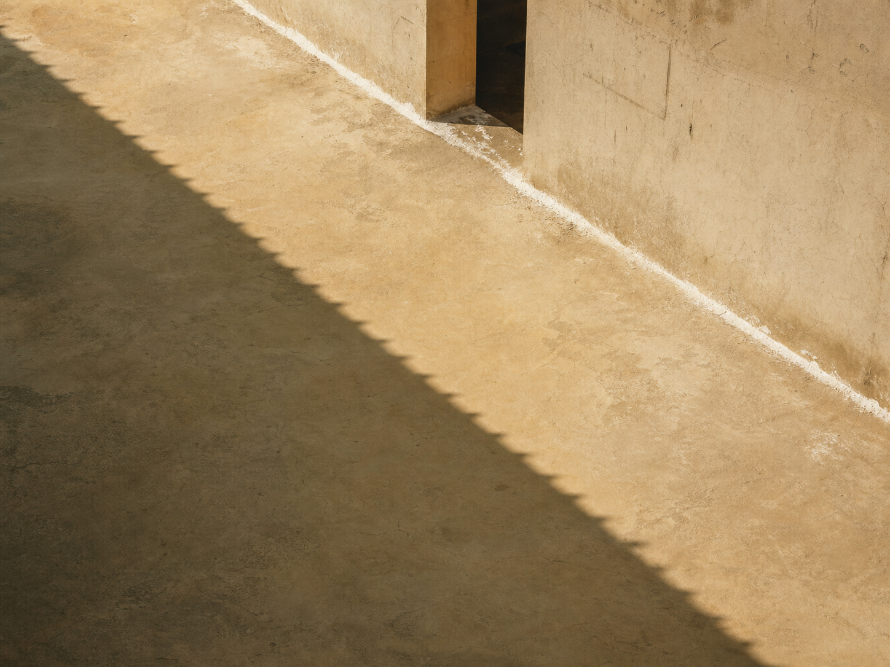
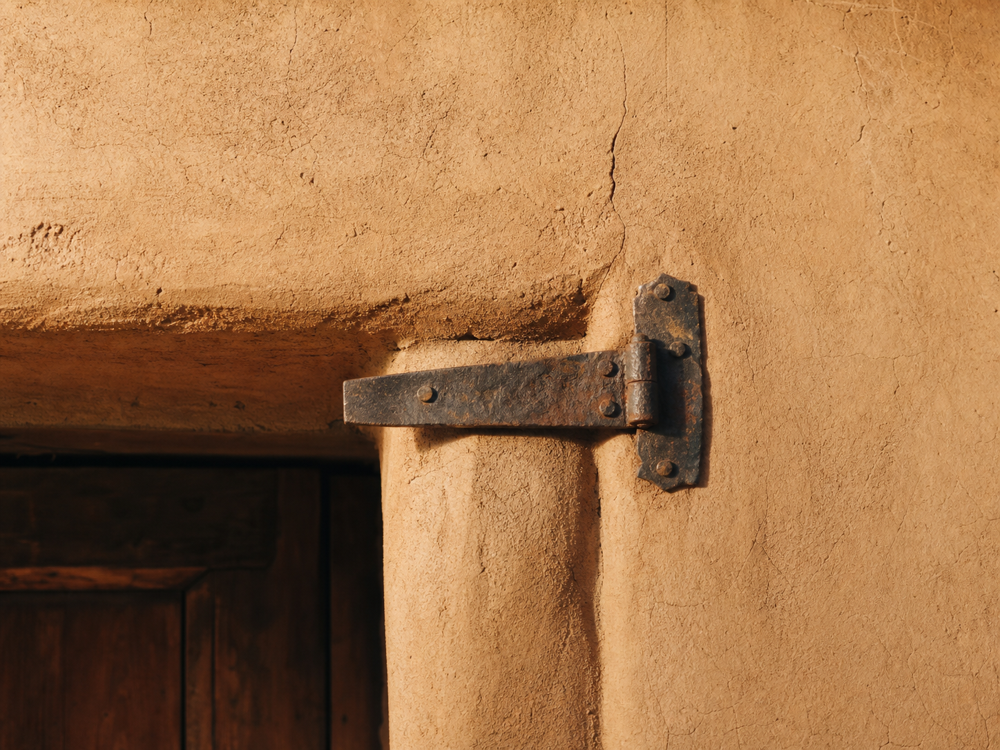
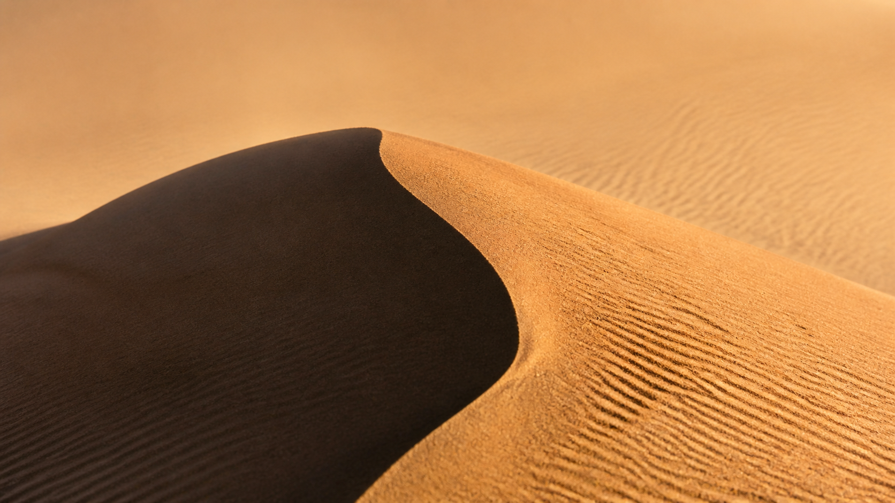

Dawn
The long shadow east
The first ochre lays down warm. Walls glow from within and the shadow climbs the wrong way. We mix the lime thicker, because it drinks the cold.

An atelier of lime and clay, mixed in courtyards where the wall keeps the hour and the colour turns with it. We do not finish surfaces. We set the angle at which they meet the light.
Estudio Meridiana, Sevilla


The first ochre lays down warm. Walls glow from within and the shadow climbs the wrong way. We mix the lime thicker, because it drinks the cold.

For seven minutes the wall has no time at all. Bone white, flat, weightless. The courtyard becomes a page. The pigment we chose for noon was a refusal.

The clay drinks the last red light and gives back a hum. Long shadows stretch off the wall, into the next courtyard, into the next day.
Four field studies of render and ground, photographed on site between 2023 and 2026.



Estudio Meridiana
Calle del Almirez 12, Sevilla 41003